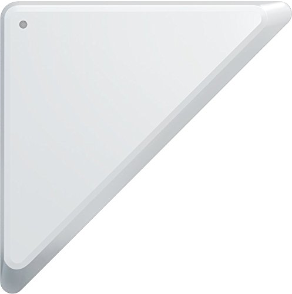
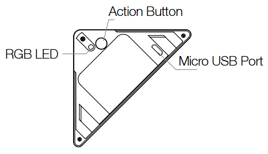

Aeon Labs Z-Wave Door/Window sensor 6 ZW112-A with rechargeable battery¶

Brief information¶
Door / Window Sensor 6 has been engineered with 3 parts; a sensor, an invisible mounting bracket and a slim magnetic shard. Each part isn’t only responsible for making Door / Window Sensor 6 so powerful, but also for making it so easy to install. The best Z-Wave. Door / Window Sensor 6 is built upon Z-Wave Plus and Aeotec’s leading Gen5 technology to offer you the fastest response times and optimal battery life between recharges. Secure security If you’re using a sensor for security you want its communication to be secure.
How to add to VENUS app¶

- 1. Activation
- Press “Add button” (button ‘+’) in app
- Input battery
- Wait for VENUS scan & detect this device and inform in app
- 2. Reset then re-add
- Press “Add button” (button ‘+’) in app
- Press the Action Button once. The green LED will blink.
- Wait for VENUS scan & detect this device and inform in app
How to add/remove associated device(s) to¶
This sensor support max 5 associated devices.
To add associated device(s) to this sensor, below action is required:
- Add z-wave notified-devices (which will be associated to this sensor) to VENUS
- Select Associate button and then select notified-device(s) to add
- Press the Action Button once.
- If successful, pop-up notification displays in VENUS app
To remove associated device(s) from this sensor, below action is required:
- Select Associate button and then select notified-device(s) to remove
- Press the Action Button once.
- If successful, pop-up notification displays in VENUS app
Configuration description¶
Set behaviour to associated devices
Available
- 0: Door is opened, associated devices is triggered as ON
- Door closed, associated devices is triggered as OFF
- 1: Door is opened, associated devices is triggered as OFF
- Door closed, associated devices is triggered as ON
Default 0
- Low battery level trigger
Adjust the amount of battery to trigger to controller as LOW BATTERY
Available 10 - 50 (battery level) Default 20
- Low battery checking interval time
Specify interval time to checking battery.
Available 240 - 2147483647 (in seconds) Default 86640 (~ 24 hours 40 minutes)
- Trigger report to setting
Specify target to receive trigger report from device
Available 0: do nothing 1: send to associated devices 2: send to controller 3: both controller and associated devices Default 1
Factory reset¶
If your primary controller is missing or inoperable, you may wish to reset all of your Door Window Sensor’s settings to their factory defaults. To do this, press and hold the Action Button for 20 seconds and the green LED will be solid for 2 seconds and then be colourful gradient to confirm a success.